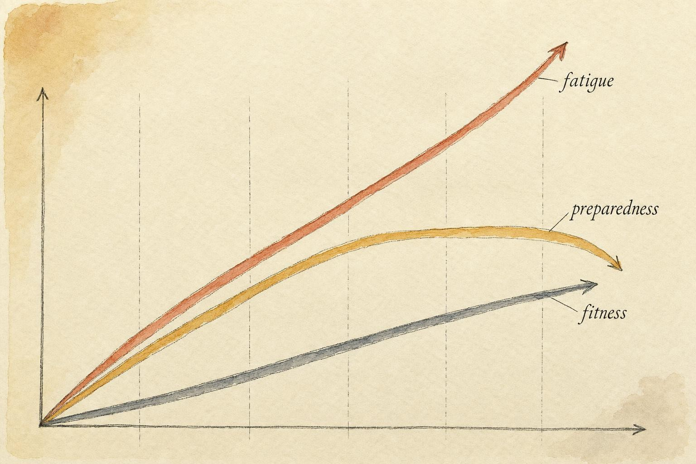
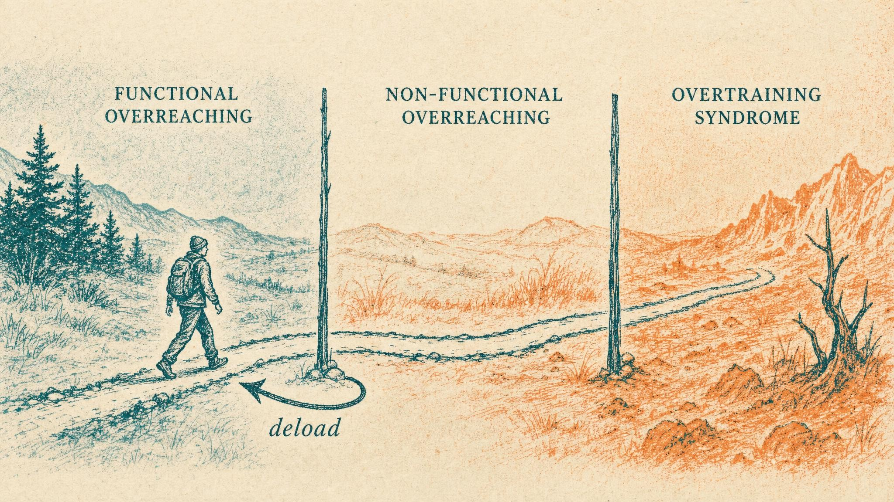

The Strategic Retreat
Why the best programs schedule their own setbacks, and how a planned reduction in load lets accumulated fitness finally surface.
Six weeks into a hard block, a lifter you know, maybe you, is doing everything right. Sleep is protected, protein is on point, sessions are logged. And yet the bar is slower. The warm up sets that used to feel like nothing now feel like something. The weights on the program have not changed, but the effort required to move them has crept upward, week over week, in a way that no single night of sleep seems to fix. The obvious diagnosis is that the training is not working. The counterintuitive and correct one is that the training is working, the fitness is there, but it is buried under fatigue that has been accumulating faster than it clears.
The answer is not to push harder. It is to retreat, deliberately, on schedule, and without apology. This chapter is about that retreat, and it follows one lifter's collision with the idea that rest could ever be part of a serious plan.
Callum is 29, a competitive powerlifter three years into the sport, and for most of that time his approach to training had one operating principle: more. More sessions, more sets, more weight on the bar than last month, and if a week felt easy, he added something to it. His coach had mentioned, more than once, that the program called for a lighter week roughly every six weeks. Callum treated that instruction the way a lot of committed lifters treat it: as something for people who needed the break, not for him. He believed, quietly and with some pride, that deloading was an admission of weakness, a thing you did if your recovery could not keep up with your ambition. His own recovery, he assumed, could keep up with anything. Ten straight weeks into a meet preparation block that was supposed to include two scheduled lighter weeks, Callum's squat had stopped moving. Not gone down exactly, just stuck, and stuck in a way that felt different from a normal plateau. We will return to Callum once the mechanics of this chapter are on the table, because his story is a clean illustration of what happens when a program's built in retreat gets skipped, and of what changed once he stopped skipping it. His experience is a thread through this chapter, not a diagnosis of him or of anyone reading, and we will keep that distinction in view throughout.
Zooming out from the session to the block
Until now, recovery in this course has lived on short timescales. We have talked about what happens between sets, between sessions, and across the sleep anchored twenty four hour cycle. Those are real and they matter. But training is not organized in days, it is organized in blocks, multi week stretches of progressive loading aimed at a specific adaptation, and in seasons that string blocks together toward a peak. At that altitude, a new pattern becomes visible, one that is invisible from inside a single week.
To see it, we return to the model that opened this course: the fitness fatigue model. Recall its central claim. A single bout of training produces two after effects at once, not one. It raises fitness, a slow building, long lasting positive adaptation, and it simultaneously raises fatigue, a larger but faster decaying negative after effect. What you can actually express on a given day, your preparedness, is the difference between the two. Chiu and Barnes (2003), revisiting Banister's original formulation for the resistance training context, put the mechanism plainly: the fitness after effect is durable while the fatigue after effect is transient, so performance is suppressed during heavy loading and only emerges once fatigue has been allowed to dissipate. Preparedness is not a readout of how fit you are. It is a readout of how fit you are minus how tired you are, and those two quantities move on different clocks.
Now iterate that across weeks. Each hard week deposits another layer of fitness and another, larger layer of fatigue. Fitness has a long time constant, so it stacks and stays. Fatigue has a short time constant, but here is the trap, the short constant only helps if you give it room to decay. Load week after week without relief and each new fatigue deposit lands on top of one that has not finished clearing. The fast decaying quantity, denied its decay, behaves like a slow accumulating one. Fitness rises steadily, fatigue rises even faster, and preparedness, the difference, first flattens and then bends downward even as your underlying capacity keeps climbing. That downward bend is the slow bar, the heavy warm ups, the sense that the program has stopped working. It is also, almost exactly, what happened to Callum somewhere around week eight, though he would not have described it in those terms at the time.
Two consequences follow from this model that are easy to say and hard to internalize. The first is that a stalled lift late in a hard block is not automatically evidence against your program. It may be evidence that the program is working exactly as intended and simply has not been unmasked yet. The second is that you cannot tell, from a single bad session, which explanation applies. A slow bar could mean the training stimulus was too small, or it could mean the training stimulus was more than adequate and is sitting underneath fatigue that has not been given anywhere to go. Distinguishing those two states is most of what this chapter is for.
It helps to place this model inside the wider vocabulary of periodization, the discipline of planning training across time rather than session by session. A single training day is often called a microcycle's building block, a training week or two is typically the microcycle itself, a block of several weeks aimed at one adaptation is the mesocycle, and a full season stringing mesocycles toward a peak is the macrocycle. The deload lives at the seam between mesocycles, or occasionally in the middle of a long one, precisely where accumulated fatigue is largest relative to the fitness banked so far. Coaches who plan well are not simply stacking hard weeks on top of each other and hoping for the best. They are deliberately alternating loading phases with unloading phases, because the unloading phase is not a pause in the plan, it is a scheduled component of the plan with its own defined job to do.

Fitness accumulates and stays; fatigue accumulates faster and, unrelieved, drags preparedness down." data-image-idx="0" style="display:block;max-width:100%;max-height:75vh;height:auto;width:auto;margin:0 auto;cursor:pointer;">The deload as a block level recovery mechanism
The answer to that question is the whole chapter in one word: fatigue. You cannot un accumulate fitness quickly, nor would you want to. But fatigue is the fast decaying term, and its decay is throttled only by continued loading. Remove or sharply reduce the load and the fast term does what fast terms do, it falls away, while the slow fitness term barely notices the interruption. The gap between them widens in your favor. Accumulated fitness, no longer masked, finally expresses itself as improved performance. This is not mystical. It is the fitness fatigue model run in reverse for a week or two.
That planned week or two is a deload. The most current and precise definition comes from Bell and colleagues (2025), in their practical review of the deloading literature: deloading is a period of reduced training stress where training demand is intentionally reduced to mitigate physiological and psychological fatigue and promote recovery. Their international Delphi consensus of expert strength and physique coaches (Bell et al., 2023) reached almost identical language, defining a deload as a period of reduced training stress designed to mitigate physiological and psychological fatigue, promote recovery, and enhance preparedness for subsequent training. Two independent groups of researchers, using two different methods, arrived at nearly the same sentence. The word to underline in both versions is intentional. A deload is not what you do when you break. It is what you do so you do not break. It belongs in the program from the moment the program is written, the way a long drive includes fuel stops before anyone runs out of gas, not after the car has already stalled on the shoulder.
The empirical case that fatigue clears faster than fitness, the quantitative engine behind every deload, comes most cleanly from the tapering literature, which studies a more dramatic version of the same maneuver. Bosquet and colleagues (2007), in a meta-analysis of twenty seven studies, found that reducing training volume by roughly 41 to 60 percent over about two weeks, while holding intensity and frequency steady, produced the largest performance gains of any tapering strategy tested. The athletes did not get fitter during the taper. They had already banked the fitness during the preceding training. What the taper did was strip away the fatigue that was hiding it. A deload is a taper's less dramatic cousin: the same underlying physics, a shorter duration, applied mid block to keep the accumulation of fatigue from ever reaching the point where it demands a full rescue. We will return to exactly how a deload and a taper differ later in this chapter, because the distinction matters for how you plan around a competition versus how you plan around an ordinary training block.
How do real athletes actually do this? Rogerson and colleagues (2024) surveyed 246 competitive strength and physique athletes and found remarkable consistency across a group that otherwise trained very differently from each other. Every single athlete reported deloading. The typical deload ran about 6.4 days and was integrated roughly every 5.6 weeks. The dominant approach was proactive, pre-planned rather than triggered by a crisis, and the dominant lever was volume: athletes cut sets and reps while, tellingly, keeping training frequency and exercise selection largely intact. They kept showing up and kept touching the same lifts, they simply did less on each visit. We will return to why that particular shape works so consistently well.
Functional versus non-functional overreaching
To time a retreat you have to understand the territory you are retreating from. The authoritative map is the overtraining continuum laid out in the joint consensus statement of the European College of Sport Science (ECSS) and the American College of Sports Medicine (ACSM), authored by Meeusen and colleagues (2012). It is worth learning precisely, because the differences between its stages are matters of degree that become matters of kind.
The consensus statement begins from an uncomfortable truth: meaningful adaptation requires overload. You must, at times, do more than you can currently fully recover from, or the stimulus is too small to drive change. Deliberately pushing into a state of accumulated fatigue for a short period is functional overreaching (FOR). Its defining feature is what happens next: after a period of reduced load, performance not only recovers but supercompensates, landing higher than it was before the overreaching phase began. FOR is the fatigue you take on with the specific intention of banking fitness and then unmasking it. The deload is the second half of that transaction, the part that converts overreaching into progress rather than leaving it as an open loan.
Push the same process too far, or too long, without adequate recovery and you cross into non-functional overreaching (NFOR). Here performance stalls or declines, and, critically, a short rest no longer fixes it. Recovery now takes weeks rather than days, and it is often accompanied by neuroendocrine disturbance and psychological symptoms: persistent mood disruption, motivational flatness, disturbed sleep that a single good night does not resolve. Bell and colleagues (2020), in a scoping review of forty seven studies in strength populations, drew the line cleanly: short-term high-volume or high-intensity resistance training tends to elicit FOR, from which athletes bounce back improved, whereas chronic high-volume or high-intensity training, sustained without relief, drifts athletes toward NFOR. The variable that separates the two outcomes is not the intensity of any single week. It is the presence or absence of scheduled relief that follows it.
Beyond NFOR lies overtraining syndrome (OTS): months, not weeks, of impaired performance and systemic dysfunction. We name it to bound the continuum, not to dwell on it, because true OTS in strength populations is comparatively rare and its diagnosis is a clinical matter, not a training decision. The everyday relevance of Meeusen and colleagues (2012) for a lifter reading this chapter is the boundary between the first two states. Programmed recovery exists to keep functional overreaching functional. The deload is the mechanism that ensures the fatigue you accumulated on purpose gets compensated on purpose, before it curdles into the non-functional kind that can cost you a season rather than a week.
One reason this continuum is so easy to misjudge from the inside is that FOR and early NFOR can feel almost identical while you are living through them. Both involve a stalled lift, both involve a week that feels heavier than it should, both involve a nagging sense that something is off. The difference only becomes visible in the response to relief. Meeusen and colleagues (2012) are explicit that this is precisely why the distinction is defined retrospectively, by what happens after a period of reduced load, rather than by any single marker you could check on a Tuesday afternoon and know for certain which state you are in. That is not a flaw in the framework, it is an honest description of how fatigue actually behaves, and it is the reason calendar-based deloading matters so much. If you wait for certainty before you retreat, you have often waited too long, because certainty only arrives after the retreat has already been tried.

The overtraining continuum after Meeusen and colleagues (2012); the deload is the loop back before the second boundary." data-image-idx="1" style="display:block;max-width:100%;max-height:75vh;height:auto;width:auto;margin:0 auto;cursor:pointer;">Timing the retreat: by plan, by performance, by symptoms
If a deload is worth scheduling, when should it fall? There are three answers, and mature programming braids them together rather than choosing one and discarding the others.
By plan
The default is calendar-based timing: a deload inserted on a fixed schedule regardless of how you feel, precisely because you cannot always feel fatigue accumulating until it is well advanced. Bell and colleagues (2025) place the pre-planned window at roughly every four to eight weeks, based on the structure of the training cycle and the athlete's recovery needs, converging closely with the 5.6-week interval Rogerson and colleagues (2024) observed athletes actually using in practice. The virtue of calendar timing is that it is proactive: it discharges fatigue before preparedness has bent downward, keeping you on the productive side of the FOR line rather than waiting for evidence that you have already crossed it. Its cost is occasional imprecision. Some deloads will land a touch early or late relative to your true state in any given block, because no fixed calendar perfectly matches a variable that fluctuates with sleep, stress, and life outside the gym.
By performance
The correction for that imprecision is autoregulation, letting objective performance data nudge the deload earlier or later than the calendar alone would suggest. The clearest signal is velocity: when bar speed at a fixed load drifts down across weeks despite unchanged programming, fatigue is masking fitness. Halson (2014), reviewing the available load-monitoring tools, catalogs the candidates: session rate of perceived exertion (RPE), heart-rate measures, heart-rate variability, psychomotor speed, and sleep quality among them, and makes the key methodological point that no single marker is decisive on its own. Each has noise, and each answers a slightly different question about the athlete's state. The Delphi consensus of expert coaches (Bell et al., 2023) endorses exactly this hybrid approach: pre-plan the deload on the calendar, then let autoregulatory signals pull it forward or push it back by a few days as the data comes in.
Practically, this means the calendar and the performance data are not competing systems, they are a single system with two inputs. A lifter who plans a deload for week six but sees bar speed already sagging in week four has useful information: pull the retreat forward rather than defending the original date out of stubbornness. A lifter who reaches week six feeling strong, with velocity holding and RPE unchanged, has equally useful information: a short delay of a few days is unlikely to cost much and may let a productive week finish properly. What autoregulation is not for is abandoning the calendar altogether in favor of pure feel, because feel is exactly the input that fatigue distorts the most. The whole reason a lifter needs an external marker like bar speed is that subjective effort tends to creep upward gradually enough that it stops registering as a red flag until it is already a serious one.
By symptoms
The last-resort trigger is symptom-based timing: you deload because the warning lights are already on, persistent soreness that does not clear, sleep that fragments, mood and motivation that flatten, a resting heart rate (RHR) that trends upward across the week. Symptom-based timing is the least desirable of the three, because by the time symptoms are unmistakable, you are already deep into accumulated fatigue and possibly nosing toward non-functional overreaching. It is reactive by definition, arriving after the problem has announced itself rather than before. Use it as a safety net that catches what the calendar and the performance data missed, never as the primary plan.
A caution that runs through this entire course applies with special force here. Some of these signals, a nagging ache that localizes to one joint, sleep disrupted by physical discomfort rather than mental arousal, symptoms that persist through a well-executed deload instead of resolving with it, are not training fatigue at all. Persistent pain or dysfunction is a signal that warrants evaluation by a qualified professional, not something to program around with a lighter week and hope. The deload is a training tool built for training fatigue. It is not a treatment, and it is not a diagnosis, and it was never designed to do either of those jobs.
Shaping the retreat: what to cut and by how much
Timing decides when. Shaping decides what, and by how much. The two most important shaping decisions are which training variable you reduce and how deeply you reduce it, and getting either one wrong can turn a well-timed deload into a wasted week.
Reduce volume first, protect intensity and skill
The strong convergent finding, from the tapering meta-analysis (Bosquet et al., 2007), the survey of practice (Rogerson et al., 2024), and the expert consensus (Bell et al., 2023), is that volume is the primary lever to pull. Cut sets and reps. Keep intensity, the load on the bar, reasonably high on a much-reduced number of hard sets, because intensity preserves the neuromuscular and skill qualities you spent the block building. You do not want to detrain the very fitness you are trying to unmask by making the deload week too easy in every dimension at once. And keep frequency and exercise selection largely intact, keep touching the movements, just less often taken to a taxing place. This is why Rogerson and colleagues (2024) found athletes maintaining frequency while slashing volume: it discharges fatigue without letting the specific technical and neuromuscular adaptations decay in the process.
Match the depth to the debt
How much volume to remove depends on how much fatigue has actually accrued, and this is where a lot of home-grown deloads go wrong in one of two opposite directions. Bell and colleagues (2025) report a wide practical range in use across coaches and athletes, anywhere from a 25 percent reduction for light housekeeping after an easy block, to as much as 90 percent when recovery needs are severe, and they propose a step-reduction framework to make the choice deliberate rather than arbitrary. The tapering data anchor the middle of that range: a 41 to 60 percent volume cut captured the largest performance gains in the Bosquet and colleagues (2007) meta-analysis. A useful heuristic follows from putting these findings together: a routine, pre-planned deload after a normal hard block wants a moderate cut, somewhere in that 40 to 60 percent zone. A deload that follows a deliberate overreaching phase, or one triggered late by symptoms because it was missed on the calendar, wants a deeper one. Too shallow and fatigue never actually clears, you have simply taken an easy week and gained nothing for it. The Accumulator widget above makes this failure mode vivid: a cut of only about 10 percent barely moves preparedness at all.
Types of deload
Deloads are not a single tool, they are a family of related tools, and matching the type to the situation is part of shaping the retreat well. A volume deload is the default described above: fewer sets and reps at similar loads, the approach the majority of surveyed athletes reach for first (Rogerson et al., 2024). It is the gentlest to implement and the easiest to fit into an ongoing block without disrupting the skill practice a lifter has been accumulating. An intensity deload instead keeps the number of sets and reps closer to normal but drops the load on the bar substantially, useful when technical practice matters more than fatigue clearance, though it is used less often in strength sports because it does relatively less to discharge the accumulated neuromuscular fatigue that heavy singles and doubles produce. A frequency deload reduces how many days per week a lifter trains a given movement while leaving the sessions themselves relatively normal, which can help when the fatigue in question is more systemic and life-driven than purely mechanical. And at the far end sits active recovery, sometimes called a full deload week, in which structured heavy training is replaced almost entirely by light general movement, easy conditioning, and mobility work. Active recovery is the deepest cut available and is reserved for situations where fatigue is severe, where symptom-based signals are already flashing, or where a lifter is returning from an illness or a demanding stretch of life stress rather than simply finishing a routine block. Most competitive lifters, and this matches what Rogerson and colleagues (2024) documented, spend most of their deloading time in the volume category, reaching for the deeper tools only when the situation actually calls for them.
The deload's more dramatic cousin: tapering
It is worth being precise about how a deload differs from a taper, because the two are built on the same physiology but serve different purposes and sit in different places in a training year. A deload is mid-block maintenance: a short, moderate reduction in load, typically around one week, whose job is to keep functional overreaching functional and prevent the drift toward the non-functional kind. Rogerson and colleagues (2024) found a mean deload duration of 6.4 days, which aligns neatly with a single microcycle. A taper, by contrast, is peaking: a longer, often deeper reduction, roughly two weeks in the meta-analytic data from Bosquet and colleagues (2007), executed once, deliberately, in the final stretch before a competition, with the explicit goal of maximizing performance on a single day rather than sustaining a program across many months. Both maneuvers exploit the same asymmetry, fatigue clears faster than fitness decays, but a deload is a recurring maintenance ritual built into the architecture of a training year, while a taper is a one-time event aimed at a peak. Confusing the two in either direction causes real problems: treating every deload like a full taper wastes training time across a season, while treating a pre-competition taper like an ordinary deload can leave an athlete under-rested on the platform.
The deload does not work alone
A deload is a powerful tool, but it operates on top of the foundation this course has been building, and it cannot substitute for a rotten foundation. Its whole job is to let fatigue dissipate, which means anything that impairs fatigue clearance will squander the deload's benefit before it has a chance to show up. If a lifter spends a deload week sleeping five hours a night and under-eating, they have reduced the training stimulus but crippled the recovery machinery that was supposed to capitalize on it. The deload creates the opportunity for fatigue to clear, sleep and nutrition are what the body actually clears it with. Program a deload and neglect the foundational levers covered earlier in this course, and you get the worst of both worlds: less training, and no recovery to show for it either.
This also settles a question the course has been building toward: where do recovery modalities rank relative to a deload? Honestly graded, a deload is a categorically more powerful recovery intervention than any device, garment, or gadget on the market. Nothing you can wear, wrap, or plug in touches the accumulated fatigue of a training block the way a strategic reduction in load does. Modalities, at best, operate at the margins of session-to-session recovery. The deload operates at the level of the block itself. When a lifter finds themselves reaching for a recovery tool because a hard phase has left them flat, the intervention with real leverage is almost always structural, less load, not another purchase.
There is also a psychological dimension worth naming plainly, because it is part of why deloading works as reliably as it does in practice and not only on paper. A lighter week interrupts the low-grade dread that a relentless training block can produce, the sense of walking into the gym already tired before the first set. Rogerson and colleagues (2024) found that athletes cited energy and fatigue management, not just physical soreness, among their main reasons for deloading, and roughly half of the surveyed athletes paired their deload with additional low-intensity recovery strategies like massage or static stretching, treating the week as a deliberate reset rather than a grudging concession. A deload that a lifter resents, treats as wasted time, or quietly sabotages by adding extra unplanned volume will not deliver the benefit the physiology promises. Buying into the retreat, understanding why it is there and what it is doing, is part of what makes it effective, which is exactly why a chapter like this one exists rather than a single instruction to just take it easier sometimes.
Finally, a bridge to where this course goes next. Throughout this chapter we have treated the load that drives fatigue as though it comes entirely from the barbell. It does not. The fitness fatigue model does not know the difference between a heavy squat session and a sleepless week of deadlines, a move across the country, or a period of acute emotional stress. Total systemic load is total systemic load, and sometimes the fatigue that necessitates a deload was deposited by life outside the gym rather than by training inside it. Reading that combined signal, and adjusting the plan to it, is the subject of the next chapter.
Case study: Callum and the week he almost skipped again
Run Callum's situation through this chapter and the picture comes into focus quickly. His block had been loaded aggressively and without relief for eight straight weeks, well past the point where a normal calendar-based deload would have discharged the accumulating fatigue. His fitness had very likely continued to rise across that stretch, the training stimulus itself was sound, but it was buried under fatigue that had nowhere to go because the scheduled retreat never happened. That is functional overreaching that was allowed to run long enough to start drifting toward the non-functional kind: performance stalling, mood flattening, recovery not keeping pace with a single good night of sleep. The autoregulatory signal his coach caught, the multi-week decline in bar speed at a fixed load, is precisely the kind of objective marker Halson (2014) identifies as more informative than how a session simply feels in the moment.
Callum's coach did not prescribe a shallow, symbolic easy week. Given how long the fatigue had been allowed to accumulate, they applied something closer to the deeper end of the range Bell and colleagues (2025) describe, a volume cut of roughly 60 percent for one week, intensity held moderately high on a small number of top sets, frequency and exercise selection left alone so Callum kept touching his competition lifts. He also, for the first time in the block, actually slept close to eight hours a night during that week rather than treating sleep as the first thing to sacrifice when life got busy, which mattered as much as the training adjustment itself given how this course has framed sleep and nutrition as the machinery that a deload's opportunity depends on.
By the end of that week, his bar speed on a standard warm-up set had returned to where it had been in week four, and by his next heavy squat session the following week, he moved a weight he had failed to move cleanly in week eight. Nothing about this outcome required a diagnosis, a lab test, or an expert credential beyond his coach's ordinary training judgment. It required recognizing an autoregulatory signal, matching a deload's depth to the fatigue debt that had built up, and protecting the sleep that let the deload actually do its job. Callum's own conclusion, stated afterward in terms any lifter reading this chapter will recognize, was that skipping week six had not saved him a week of training. It had cost him four, plus the week he eventually had to spend catching up.
The second scheduled deload, at week ten, arrived on time this time. Callum still felt the old pull to skip it, the meet was closer now and every week felt more precious than the last, but he had a data point he had not had before: a concrete memory of what week eight had actually felt like, and a concrete memory of how quickly a well-timed retreat had reversed it. He took the week as written. That single change in behavior, taking the second deload rather than arguing himself out of it a second time, is the entire practical payload of this chapter compressed into one decision. The physiology does not care whether a lifter believes in it. It cares whether the retreat actually happens on schedule.
Successful training must involve overload, but must also avoid the combination of excessive overload with inadequate recovery.
Meeusen et al. (2012), joint consensus statement of the European College of Sport Science and the American College of Sports Medicine
Key Takeaways
- Across a training block, fitness accumulates slowly and durably while fatigue accumulates faster and clears only when load is reduced. Preparedness, the difference between the two, can flatten and decline even as underlying fitness keeps rising.
- A deload is a planned, intentional reduction in training stress that lets the fast-decaying fatigue term fall away so banked fitness can express itself (Bell et al., 2023, 2025). It is the block-level version of the session-level stimulus-recovery balance, scheduled proactively rather than deployed in a crisis.
- Functional overreaching is fatigue taken on deliberately and later compensated into supercompensation. Non-functional overreaching is what happens when that fatigue is never relieved. Programmed recovery exists to keep overreaching functional (Meeusen et al., 2012; Bell et al., 2020).
- Time deloads primarily by plan (roughly every four to eight weeks), correct with autoregulation from performance signals like bar speed, and treat symptoms as a safety net, never the primary trigger (Bell et al., 2023, 2025; Rogerson et al., 2024; Halson, 2014).
- Shape a deload by cutting volume 40 to 60 percent for a routine reset (deeper if fatigue is severe) while protecting intensity, frequency, and exercise selection, for roughly one week. A deload is mid-block maintenance; a taper is a longer, deeper, one-time reduction aimed at a single competitive peak (Bosquet et al., 2007; Bell et al., 2025).
- Deloads exist as a family of tools, volume, intensity, frequency, and active recovery, and matching the type and depth to the actual fatigue debt matters more than defaulting to the same easy week every time.
- A deload's benefit is squandered without sleep and nutrition, and it dwarfs any recovery gadget in leverage. Persistent pain or dysfunction is not fatigue to program around, it warrants professional evaluation.
The fitness fatigue model cannot tell a heavy training week from a stressful life week, systemic load is systemic load. In Chapter 8 we widen the frame one more turn to ask how work, sleep debt, relationships, and acute stress deposit fatigue into the same account the barbell draws on, and how to adjust the plan when the load that demands a retreat never came from the gym at all.
References
Bell, L., Darragh, I., Travis, S. K., Rogerson, D., & Nolan, D. (2025). A practical approach to deloading: Recommendations and considerations for strength and physique sports. Strength and Conditioning Journal. https://doi.org/10.1519/SSC.0000000000000910
Bell, L., Strafford, B. W., Coleman, M., Androulakis Korakakis, P., & Nolan, D. (2023). Integrating deloading into strength and physique sports training programmes: An international Delphi consensus approach. Sports Medicine, Open, 9(1), 87. https://doi.org/10.1186/s40798-023-00633-0
Bell, L., Ruddock, A., Maden-Wilkinson, T., & Rogerson, D. (2020). Overreaching and overtraining in strength sports and resistance training: A scoping review. Journal of Sports Sciences, 38(16), 1897-1912. https://doi.org/10.1080/02640414.2020.1763077
Bosquet, L., Montpetit, J., Arvisais, D., & Mujika, I. (2007). Effects of tapering on performance: A meta-analysis. Medicine and Science in Sports and Exercise, 39(8), 1358-1365. https://doi.org/10.1249/mss.0b013e31806010e0
Chiu, L. Z. F., & Barnes, J. L. (2003). The fitness-fatigue model revisited: Implications for planning short- and long-term training. Strength and Conditioning Journal, 25(6), 42-51. https://doi.org/10.1519/1533-4295(2003)025<0042:tfmrif>2.0.co;2
Halson, S. L. (2014). Monitoring training load to understand fatigue in athletes. Sports Medicine, 44(Suppl. 2), 139-147. https://doi.org/10.1007/s40279-014-0253-z
Meeusen, R., Duclos, M., Foster, C., Fry, A., Gleeson, M., Nieman, D., Raglin, J., Rietjens, G., Steinacker, J., & Urhausen, A. (2012). Prevention, diagnosis and treatment of the overtraining syndrome: Joint consensus statement of the European College of Sport Science (ECSS) and the American College of Sports Medicine (ACSM). Medicine and Science in Sports and Exercise, 45(1), 186-205. https://doi.org/10.1249/MSS.0b013e318279a10a
Rogerson, D., Nolan, D., Androulakis Korakakis, P., Immonen, V., Wolf, M., & Bell, L. (2024). Deloading practices in strength and physique sports: A cross-sectional survey. Sports Medicine, Open, 10(1), 26. https://doi.org/10.1186/s40798-024-00691-y